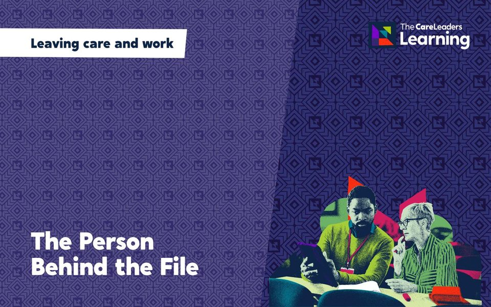

Boys in care need to be seen too.
Boys in care are more likely to be excluded, criminalised and moved, and less likely to be asked how they are. This course looks at why, and what adults can do to reach boys who have learned to keep people out.
Designed and delivered by people with lived experience of care and professional experience of children’s services, so the story is real and the practice is sound.
At a glance
- LengthHalf day
- FormatFace to face or live online
- Who it is forResidential and fostering teams
- Group sizeUp to 40 in the room, more online
- IncludesConversation starters and a team action plan
- Built onStory, theory and action: a real story, the evidence behind it and tools to use the next day
Who it is for, and what they learn
Who it is for
- Residential and fostering teams
- Youth workers and personal advisers
- Pastoral and behaviour staff in schools
- Youth justice and early help workers
What they learn
- How masculinity, trauma and care interact
- Why anger is often the only feeling boys feel allowed to show
- Building trust side by side, not face to face
- Keeping boys in education and out of the justice system
- Talking about feelings without making it a lesson
How the course runs
The same shape whether we deliver it in your building, live online or as a conference session. We tailor the examples to your service.
The patterns for boys in care, and the stories behind them
Shame, loss and the masks boys learn to wear
Relationships, activity and adults who stay
What your team will try next
Ways to book it
We come to you. Development days, twilights and team days, in your building or a venue you choose.
Live sessions online with a facilitator, so teams across a large area can join without travelling.
Every course can be shaped around your team: the length, the examples and the mix of people in the room. Tell us what you need and we will build it with you.
You might also like
 Behind the BehaviourReading behaviour as communication, and responding without losing the relationship.Face to faceLive onlineOn demandHalf day or full day. On demand in about two hoursFind out more
Behind the BehaviourReading behaviour as communication, and responding without losing the relationship.Face to faceLive onlineOn demandHalf day or full day. On demand in about two hoursFind out more
The Person Behind the FileFor probation, police, housing and health staff working with care-experienced adults.Face to faceLive onlineHalf dayFind out more